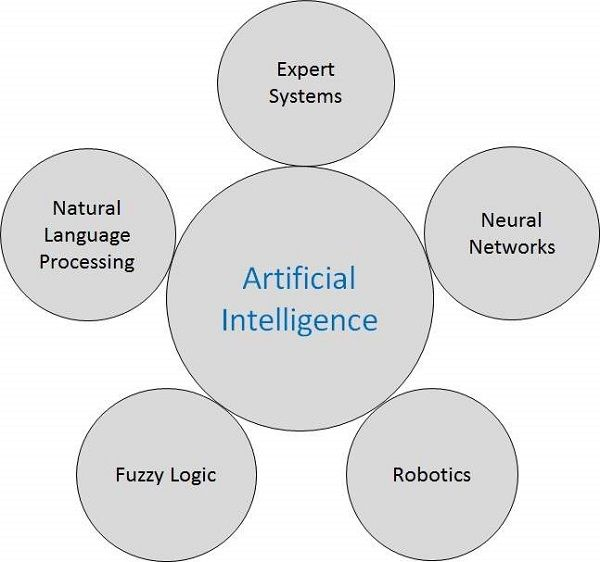

Kể từ khi phát minh ra máy tính và máy móc, khả năng thực hiện các nhiệm vụ khác nhau của chúng đã tăng lên theo cấp số nhân. Con người đã phát triển hệ thống máy tính trên quan điểm các lĩnh vực làm việc đa dạng, tốc độ ngày càng tăng và kích thước ngày càng giảm theo thời gian. Một nhánh của Khoa học Máy tính có tên là Trí tuệ nhân tạo (AI) đang theo đuổi việc tạo ra các máy tính hoặc máy móc thông minh như con người.
Trí tuệ nhân tạo (AI) là gì?
Theo cha đẻ của Trí tuệ nhân tạo, John McCarthy, đó là “Khoa học và kỹ thuật tạo ra các máy móc thông minh, đặc biệt là các chương trình máy tính thông minh”.
Trí tuệ nhân tạo (AI) là một cách làm cho một máy tính, một robot điều khiển bằng máy tính hoặc một phần mềm suy nghĩ một cách thông minh, theo cách tương tự như suy nghĩ của con người thông minh.
AI được hoàn thiện bằng cách nghiên cứu cách bộ não con người suy nghĩ và cách con người học hỏi, quyết định và làm việc trong khi cố gắng giải quyết một vấn đề và sau đó sử dụng kết quả của nghiên cứu này làm cơ sở phát triển phần mềm và hệ thống thông minh.
Mục tiêu của AI
Tạo ra hệ thống chuyên gia - Hệ thống thể hiện hành vi thông minh, học hỏi, chứng minh, giải thích và tư vấn cho người dùng của nó.
Để triển khai trí thông minh của con người trong máy móc - Tạo ra các hệ thống hiểu, suy nghĩ, học hỏi và hành xử như con người.
Các ứng dụng của AI
AI đã thống trị trong các lĩnh vực khác nhau như:
Game - AI đóng vai trò quan trọng trong các trò chơi chiến lược như cờ vua, poker, tic-tac-toe, v.v., nơi máy có thể nghĩ ra một số lượng lớn các vị trí có thể dựa trên kiến thức kinh nghiệm.
Xử lý ngôn ngữ tự nhiên - Có thể tương tác với máy tính để hiểu ngôn ngữ tự nhiên của con người.
Hệ thống chuyên gia - Có một số ứng dụng tích hợp máy móc, phần mềm và thông tin đặc biệt để truyền đạt lý luận và tư vấn. Họ cung cấp giải thích và lời khuyên cho người dùng.
Hệ thống thị giác - Các hệ thống này hiểu, diễn giải và lĩnh hội đầu vào trực quan trên máy tính. Ví dụ,
Máy bay do thám chụp ảnh, được sử dụng để tìm ra thông tin không gian hoặc bản đồ của các khu vực
Các bác sĩ sử dụng hệ thống chuyên gia lâm sàng để chẩn đoán cho bệnh nhân.
Cảnh sát sử dụng phần mềm máy tính có thể nhận dạng khuôn mặt của tội phạm với bức chân dung được lưu trữ bởi nghệ sĩ pháp y.
Nhận dạng giọng nói - Một số hệ thống thông minh có khả năng nghe và hiểu ngôn ngữ dưới dạng câu và ý nghĩa của chúng trong khi con người nói chuyện với nó. Nó có thể xử lý các trọng âm khác nhau, từ lóng, tiếng ồn trong nền, thay đổi tiếng ồn của con người do lạnh, v.v.
Nhận dạng chữ viết tay - Phần mềm nhận dạng chữ viết tay đọc văn bản được viết trên giấy bằng bút hoặc trên màn hình bằng bút cảm ứng. Nó có thể nhận ra hình dạng của các chữ cái và chuyển nó thành văn bản có thể chỉnh sửa.
Robot thông minh - Robot có thể thực hiện các nhiệm vụ do con người giao. Chúng có các cảm biến để phát hiện dữ liệu vật lý từ thế giới thực như ánh sáng, nhiệt, nhiệt độ, chuyển động, âm thanh, va chạm và áp suất. Chúng có bộ xử lý hiệu quả, nhiều cảm biến và bộ nhớ khổng lồ, để thể hiện trí thông minh. Ngoài ra, chúng có khả năng học hỏi từ những sai lầm của mình và chúng có thể thích nghi với môi trường mới.
Các lĩnh vực của AI

1. Fuzzy Logic
Logic mờ (FL) là một phương pháp lập luận giống với suy luận của con người. Cách tiếp cận của FL bắt chước cách ra quyết định của con người liên quan đến tất cả các khả năng trung gian giữa các giá trị kỹ thuật số YES và NO.
Khối logic thông thường mà máy tính có thể hiểu được nhận đầu vào chính xác và tạo ra đầu ra xác định là TRUE hoặc FALSE, tương đương với YES hoặc NO của con người.
Người phát minh ra logic mờ, Lotfi Zadeh, đã nhận thấy rằng không giống như máy tính, việc ra quyết định của con người bao gồm một loạt các khả năng giữa CÓ và KHÔNG, chẳng hạn như:
CHẮC CHẮN CÓ
CÓ THỂ CÓ
KHÔNG THỂ NÓI
CÓ THỂ KHÔNG
CHẮC CHẮN LÀ KHÔNG
Logic mờ hoạt động trên các mức khả năng của đầu vào để đạt được đầu ra xác định.
Các lĩnh vực ứng dụng chính của logic mờ là:
Hệ thống ô tô
Hộp số tự động
Tay lái bốn bánh
Kiểm soát môi trường phương tiện
Hàng điện tử tiêu dùng
Hệ thống Hi-Fi
Máy photocopy
Máy ảnh tĩnh và máy quay video
Tivi
Hàng gia dụng
Lò vi sóng
Tủ lạnh
Lò nướng bánh mì
Máy hút bụi
Máy giặt
2. Natural Language Processing
Xử lý ngôn ngữ tự nhiên (NLP) đề cập đến phương pháp AI giao tiếp với một hệ thống thông minh sử dụng ngôn ngữ tự nhiên như tiếng Anh.
Xử lý ngôn ngữ tự nhiên là bắt buộc khi bạn muốn một hệ thống thông minh như rô bốt thực hiện theo hướng dẫn của bạn, khi bạn muốn nghe quyết định từ hệ thống chuyên gia lâm sàng dựa trên đối thoại, v.v.
Lĩnh vực NLP liên quan đến việc chế tạo máy tính để thực hiện các tác vụ hữu ích với ngôn ngữ tự nhiên mà con người sử dụng. Đầu vào và đầu ra của một hệ thống NLP có thể là:
Lời nói
Văn bản viết tay
3. Expert Systems
Hệ thống chuyên gia (ES) là một trong những lĩnh vực nghiên cứu nổi bật của AI. Nó được giới thiệu bởi các nhà nghiên cứu tại Đại học Stanford, Khoa Khoa học Máy tính.
Hệ thống chuyên gia là các ứng dụng máy tính được phát triển để giải quyết các vấn đề phức tạp trong một lĩnh vực cụ thể, ở mức độ thông thường và chuyên môn của con người.
Đặc điểm của Hệ thống chuyên gia:
Hiệu suất cao
Có thể hiểu được
Đáng tin cậy
Phản hồi cao
Hệ thống chuyên gia có khả năng:
Tư vấn
Hướng dẫn và hỗ trợ con người ra quyết định
Minh chứng
Tìm ra giải pháp
Chẩn đoán
Giải thích
Phiên dịch đầu vào
Dự đoán kết quả
Biện minh cho kết luận
Đề xuất các phương án thay thế cho một vấn đề
Nhưng lại không có khả năng:
Thay người đưa ra quyết định
Có năng lực con người
Xuất ra output chính xác cho base kiến thức không đầy đủ
Tinh chỉnh kiến thức của riêng chúng
Các ứng dụng của Hệ thống Chuyên gia
Lĩnh vực thiết kế: Thiết kế ống kính máy ảnh, thiết kế ô tô.
Lĩnh vực y tế: Hệ thống chẩn đoán để suy ra nguyên nhân gây bệnh từ dữ liệu quan sát, dẫn truyền các hoạt động y tế trên con người.
Hệ thống giám sát: So sánh dữ liệu liên tục với hệ thống quan sát được hoặc với hành vi theo quy định như giám sát rò rỉ trong đường ống xăng dầu dài.
Hệ thống kiểm soát quy trình: Kiểm soát quá trình vật lý dựa trên giám sát.
Lĩnh vực tri thức: Tìm ra lỗi trên phương tiện giao thông, máy tính.
Tài chính/Thương mại: Phát hiện gian lận có thể xảy ra, giao dịch đáng ngờ, giao dịch thị trường chứng khoán, lên lịch hàng không, lên lịch hàng hóa.
4. Robotics
Robotics là một nhánh của AI, bao gồm Kỹ thuật điện, Kỹ thuật cơ khí và Khoa học máy tính để thiết kế, xây dựng và ứng dụng rô bốt.
Các khía cạnh của robotics:
Các robot có cấu tạo, hình thức hoặc hình dạng cơ học được thiết kế để hoàn thành một nhiệm vụ cụ thể.
Chúng có các thành phần điện cung cấp năng lượng và điều khiển máy móc.
Chúng chứa một số cấp độ của chương trình máy tính xác định cái gì, khi nào và bằng cách nào một robot thực hiện điều gì đó.
Ứng dụng của Robotics
Các ngành công nghiệp - Robot được sử dụng để xử lý vật liệu, cắt, hàn, sơn màu, khoan, đánh bóng, v.v.
Quân sự - Robot tự hành có thể tiếp cận các khu vực nguy hiểm và khó tiếp cận trong chiến tranh. Một robot tên Daksh, do Tổ chức Nghiên cứu và Phát triển Quốc phòng (DRDO) phát triển, có chức năng tiêu diệt các vật thể đe dọa tính mạng một cách an toàn.
Y học - Các robot có khả năng thực hiện hàng trăm thử nghiệm lâm sàng đồng thời, phục hồi chức năng cho những người tàn tật vĩnh viễn và thực hiện các ca phẫu thuật phức tạp như u não.
Thám hiểm - Có thể kể tên một số robot leo núi đá được sử dụng để khám phá không gian, máy bay không người lái dưới nước được sử dụng để khám phá đại dương.
Giải trí - Các kỹ sư của Disney đã tạo ra hàng trăm robot để làm phim.
5. Neural Networks
Người phát minh ra máy tính thần kinh đầu tiên, Tiến sĩ Robert Hecht-Nielsen, định nghĩa một mạng lưới thần kinh là:
"... một hệ thống máy tính được tạo thành từ một số phần tử xử lý đơn giản, có tính kết nối cao, xử lý thông tin bằng phản ứng trạng thái động của chúng với các đầu vào bên ngoài."
Các ứng dụng của mạng thần kinh
Hàng không vũ trụ - Máy bay lái tự động, phát hiện lỗi máy bay.
Ô tô - Hệ thống hướng dẫn của ô tô.
Quân sự - Định hướng và chỉ đạo vũ khí, theo dõi mục tiêu, phân biệt đối tượng, nhận dạng khuôn mặt, nhận dạng tín hiệu / hình ảnh.
Điện tử - Dự đoán trình tự mã, bố trí chip IC, phân tích lỗi chip, thị giác máy, tổng hợp giọng nói.
Thẩm định tài chính - bất động sản, cố vấn cho vay, sàng lọc thế chấp, xếp hạng trái phiếu doanh nghiệp, chương trình giao dịch danh mục đầu tư, phân tích tài chính doanh nghiệp, dự đoán giá trị tiền tệ, trình đọc tài liệu, đánh giá hồ sơ tín dụng.
Kiểm soát quá trình công nghiệp - sản xuất, thiết kế và phân tích sản phẩm, hệ thống kiểm tra chất lượng, phân tích chất lượng hàn, dự đoán chất lượng giấy, phân tích thiết kế sản phẩm hóa học, mô hình hóa động lực của hệ thống quy trình hóa học, phân tích bảo trì máy, đấu thầu dự án, lập kế hoạch và quản lý.
Y tế - Phân tích tế bào ung thư, phân tích điện não đồ và điện tâm đồ, thiết kế bộ phận giả, bộ tối ưu hóa thời gian cấy ghép.
Speech - Nhận dạng giọng nói, phân loại giọng nói, chuyển văn bản thành giọng nói.
Viễn thông - Nén hình ảnh và dữ liệu, dịch vụ thông tin tự động, dịch ngôn ngữ nói theo thời gian thực.
Vận tải - Hệ thống chẩn đoán phanh xe tải, lập lịch trình xe, hệ thống định tuyến.
Phần mềm - Nhận dạng mẫu trong nhận dạng khuôn mặt, nhận dạng ký tự quang học, v.v.
Xử lý tín hiệu - Mạng nơ-ron có thể được đào tạo để xử lý tín hiệu âm thanh và lọc tín hiệu đó một cách thích hợp trong máy trợ thính.